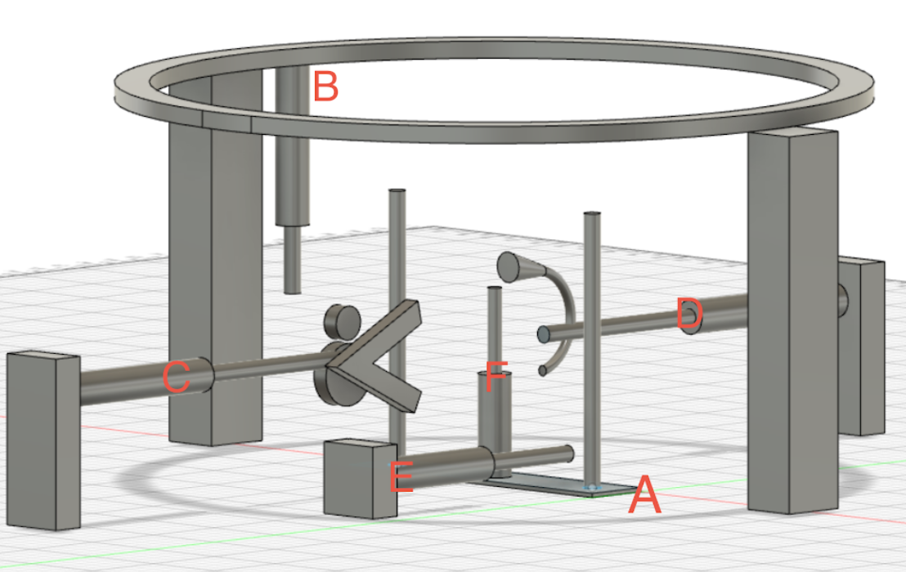

Tri-Mar Bow Machine(Conceptual Design)

Trick Or Treating Simulator

FIRST Robotics Competition
Hi I'm Gatlin! I am a Junior at Arizona State University.
I am studying Computer Science with an emphasis in Cyber Security. Since Elementary school I've known that I wanted to go into a Computer Science field after joining an after school robotics program. From then on I made it my mission to never stop learning about programming and other STEM related activities. Java is the language I know best but I dabble in many others. I am familiar with: Python, HTML/CSS, C, C#, and Swift.
You're probably wondering what kind of stuff I do. While I'm always working on something new here are some of my most recent projects!. (click on any of the pictures to see more info and more projects!)